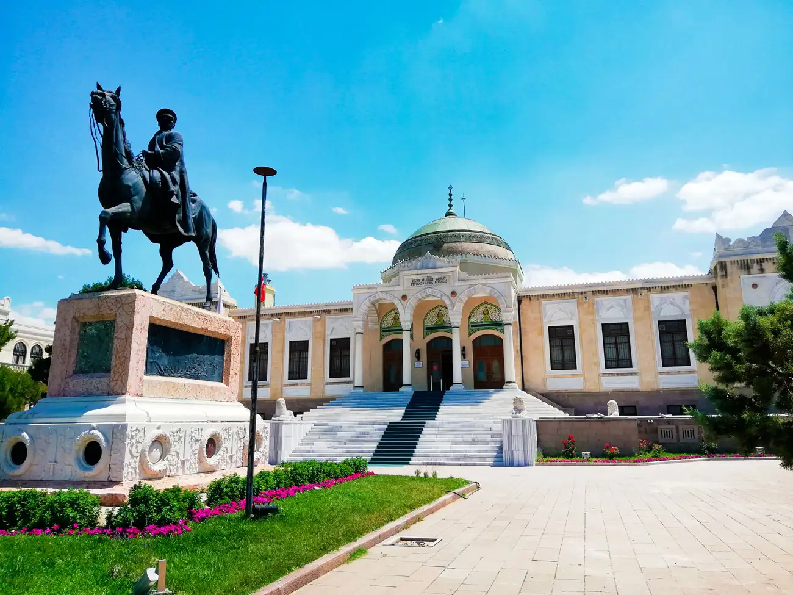
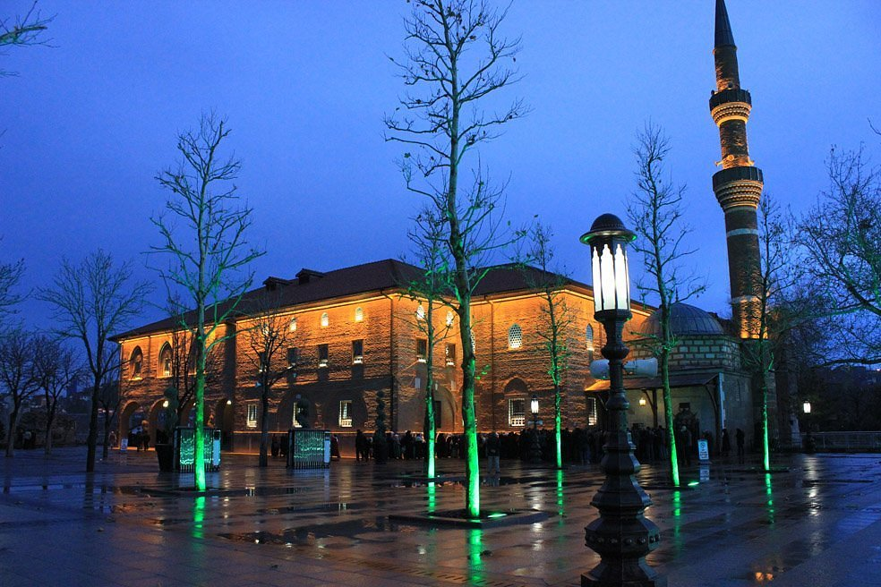
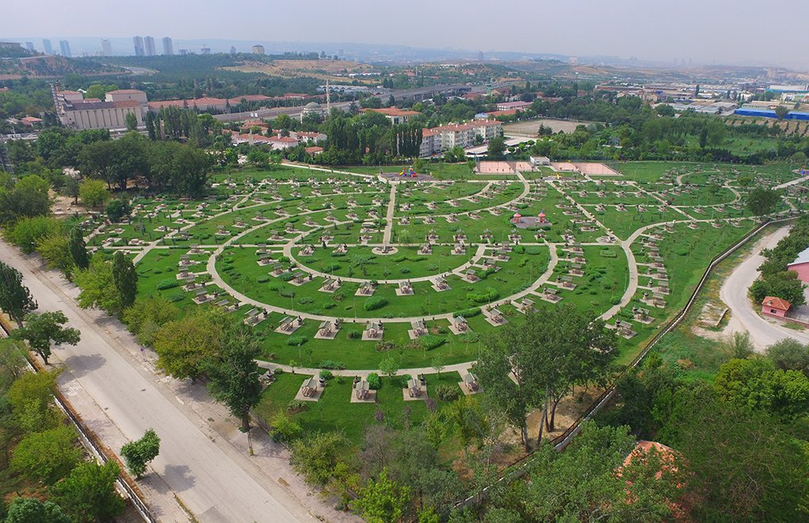
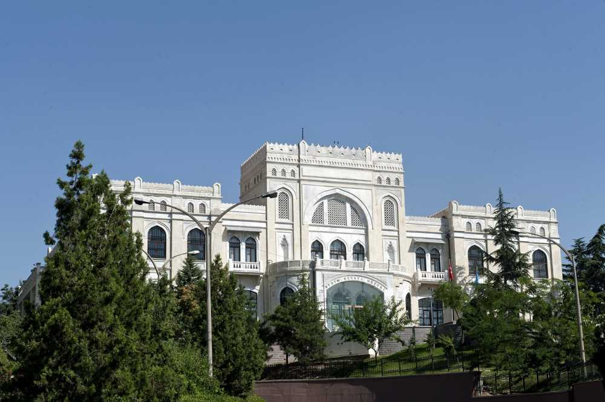

1. Anıtkabir

Anıtkabir is the mausolea of the founder of Türkiye, Mustafa Kemal Atatürk. There you can find historical aspects of the city, as well as the Turkish War of Independence and the legacy of Atatürk. Anıtkabir is a complex located in the Çankaya district of Ankara, which includes the mausoleum of Mustafa Kemal Atatürk. Designed by Emin Onat and Orhan Arda, the construction of Anıtkabir began in 1944 and was completed in 1953. In addition to the mausoleum building, the complex consists of various structures and monuments, as well as a wooded area known as the Peace Park.
2. Ethnography Museum
The unique examples of Turkish Art from the Seljuk Period until Present are exhibited in the Ethnography Museum, which has been served since 1930. In the Collection of the Museum those can be seen; Folk clothes, ornaments, shoes, clogs compiled from various regions of Anatolia, women's and men's socks of Sivas region, various pouches, embroideries, needlework, waistbands, towels, bundles, bed covers, bridal clothes, groom shaving sets, carpets from various regions and rugs, a wide variety of artefacts representing Anatolian metalwork, Ottoman Period bows, arrows, flintlock pistols, rifles, swords and scimitars, Turkish tile porcelains and Kütahya porcelains, Sufi and cult objects, and beautiful examples of Turkish writing. In the museum, there is a specialized library containing publications related to Anatolian ethnography and folklore and art history. The body of Mustafa Kemal Atatürk kept here until his transfer to Anıtkabir (Mausoleum of Atatürk) in 1953. This part is still preserved in the form of a symbolic area, in honour of Atatürk's memory.
3. Hacı Bayram Mosque
Hacı Bayram Mosque, also known as Hacı Bayram Veli Mosque is a mosque in Altındağ district of Ankara. The name of Hacı Bayram Mosque is derived from Turkish poet and Sufi, Hacı Bayram Veli. Today, it is one of the most popular destinations to visit in Ankara. Hacı Bayram Mosque is a typical example of both 17th century and 18th-century mosque architectural styles. The mosque is next to the Augustus Temple from the east side, and the Hacı Bayram Veli Tomb takes place on the south side of the Hacı Bayram Mosque. Hacı Bayram Mosque is classified in “historical mosques on Turkey,” and it was taken to the tentative UNESCO World Heritage list in 2016. It has an impressive look both outside and inside. If you ever find yourself in Ankara, visiting Hacı Bayram Mosque is highly recommended.
4. Atatürk Forest Farm and Zoo
Atatürk Forest Farm is a farm that was built by Gazi Mustafa Kemal Atatürk on a piece of land purchased from different people in 1925 in Yenimahalle, above Ankara, and farms for Turkish agriculture. The farm, which was donated to the Treasury by Atatürk in 1937, operates as a legal entity affiliated to the Ministry of Agriculture and Forestry today. It was registered as a first degree historical and natural protected area in 1992. Within the farm land, which is the biggest green area of Ankara, there are visitor areas such as the largest zoo in the village, a similar house in Thessaloniki where Atatürk was born, the historical Black Sea Pool and the State Cemetery.
5. Ankara Castle

The imposing citadel of Ankara is perched on a hill high above the city. It takes its visitors on a fascinating journey into history. Many peoples such as the Hittites, the Romans and the Galatians have left their mark. Today, the citadel is a historical attraction in the old town and delights its visitors with the magnificent view from the observation towers in the fortification wall. Inside the building there are numerous carpet sellers and antique dealers. The former horse market now sells aromatic smelling spices. The gate to the outer castle is marked by a clock tower. The inner castle can be reached through an angular gate. There is a link between the upper and lower walls called the Sark Kale. Visitors can climb it to overlook the whole city. The inner wall consists of 42 towers, it ends with the Ak Kale, the White Castle.
6. Ankara State Art and Sculpture Museum
The museum building, in 1976, four valuable paintings from the Ministry of National Education -Osman Hamdi Bey's "Arms Dealer", V. Vereshchagin's "At Timur's Grave", Zonaro's "Young Girl Portrait", Emel Cimcoz (Korutürk )'s “Turkish Child's Gratitude to Atatürk”-; These works were recorded as the first pieces of the museum collection. The collection provides the opportunity to witness the changing understanding of art and major historical processes in Turkey from the end of the 19th century to the present day in the field of visual arts. The collection, which consists of painting, sculpture, ceramics, original prints, Turkish ornament art and photography, is one of the most important archives of Turkey's history of visual arts for more than a century; The works that won awards in the State Painting and Sculpture Exhibitions were created from the works brought into the inventory through transfers, purchases and donations from public institutions and organizations.